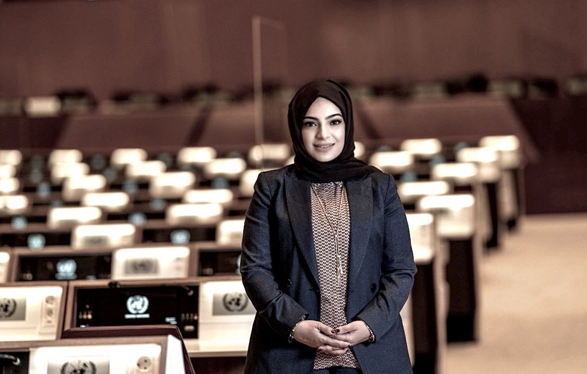

Law
Clifford Chance, London and Dubai — arbitration, corporate finance and cross-border matters for governments and financial institutions.
Draft Design for review — not published. Content still being confirmed.
Skip to content
Distinguished Fellow, UCLA Center for Middle East Development
Working at the intersection of law, government, business and diplomacy.
Four sides of the same table. Most careers see one of them. The argument of this site is not that she has held a number of posts, but that the same questions look entirely different depending on which chair you are sitting in — and that having sat in all four is the whole of the value.
Clifford Chance, London and Dubai — arbitration, corporate finance and cross-border matters for governments and financial institutions.
Director of Economic Legislation at the UAE Ministry of Economy — fourteen major economic laws, the first modernisation in twenty-six years.
Senior Executive Vice President and Group Chief General Counsel at Emirates NBD — its first female C-suite executive, leading a team of three hundred.
Deputy Permanent Representative and Chargé d'Affaires to the United Nations in Geneva, across more than forty international organisations.
The rare adviser who can tell a minister and a chief executive the same difficult thing in the same afternoon.
A statement of how she works — not a quotation.
Selected recognition
World Health Organization · Top 100 Emirati Pioneers · IFLR Women in Business Law · Arabian Business Arab Women 45 · 30% Club GCC
See the recognitions